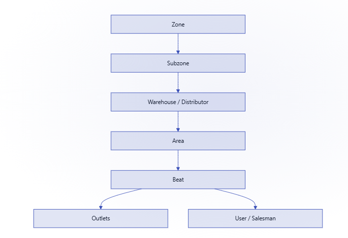

1. Create a beat
Open the Add Beat form
Go to
yourcompanyurl.bizom.in/beats/addFill in the details
Field What to enter Beat Name Name of the beat you want to create. Area The area this beat belongs to. ERP ID Optional, only if your system uses ERP integration. Submit the form to save the new beat
2. Beat MDM templates
Two MDM templates cover beat management:
| Template | Purpose |
|---|---|
| Beats | Upload and update beats in bulk. |
| Beat Area Mapping | Map beats to areas. |
3. Which template should you use?
| You want to… | Use this MDM |
|---|---|
| Add new beats in bulk | Beats |
| Map beats to areas | Beat Area Mapping |
TipSet up your areas before your beats, a beat always maps to an area, so creating them in that order avoids rework.
4. Assigning beats to users
Creating a beat is only half the job, it needs outlets mapped to it, and a salesperson assigned to cover it.

Create the beat via MDM
Use the Beats MDM template (see above) if you haven't already.
Map outlets to the beat
Use the Map outlets to beats MDM. You only need to enter the
Outlet IDandBeat IDto map them.Assign the beat to a user
Once outlets are mapped, assign the beat to the salesperson who'll cover it from the PJP screen, this is also where you set which days of the week they visit it.
Was this guide helpful?